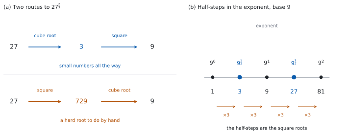

SL 1.7a — Laws of exponents with rational exponents（有理数の指数）
- \(a^{\frac{1}{m}} = \sqrt[m]{a}\) が、なぜそうなるのかを説明できる。
- \(m\) が偶数のとき、正の根を指すという約束を守れる。
- \(a^{\frac{m}{n}}\) を、電卓なしで計算できる（Paper 1 では、先に根をとるのが定石）。
- 負の有理数の指数 \(a^{-\frac{m}{n}}\) を扱える。
- 根号の形（\(\sqrt{x}\)、\(\sqrt[3]{x}\)）と、指数の形（\(x^{\frac{1}{2}}\)、\(x^{\frac{1}{3}}\)）を行き来できる。
- \(x^{\frac{m}{n}} = c\) の形の方程式を解ける。
The idea
1. 分数の指数は、どこから来るのか
「\(\dfrac{1}{2}\) 回掛ける」は、そのままでは意味が分かりません。SL 1.5 の \(a^{0}\) や \(a^{-n}\) と、同じ状況です。
やることも同じです。指数法則が使えるように決めます。
\(\left(a^{m}\right)^{n} = a^{mn}\) を認めるなら、\(a^{\frac{1}{2}}\) を \(2\) 乗すると
\[ \left(a^{\frac{1}{2}}\right)^{2} = a^{\frac{1}{2} \times 2} = a^{1} = a \]
\(2\) 乗すると \(a\) になる数です。そういう数は \(2\) つありますが、正のほうを選ぶと決めます。つまり \(\sqrt{a}\) です（理由は第 2 節と Why it works で）。
同じように、\(a^{\frac{1}{3}}\) を \(3\) 乗すると \(a\) になるので、\(a^{\frac{1}{3}} = \sqrt[3]{a}\) です。
2. \(a^{\frac{1}{m}} = \sqrt[m]{a}\)
\[ a^{\frac{1}{m}} = \sqrt[m]{a} \tag{1}\]
\(a > 0\)（文字なら \(x > 0\)）とします。\(m\) が偶数のとき、負の数の \(m\) 乗根は実数の中にないからです。\((-16)^{\frac{1}{2}}\) は、実数としては定義されません。
問題文に \(x > 0\) と書いてあるのは、このためです。
公式集の 1.7 の欄に印刷されているのは、対数の法則・底の変換・\(a^{x} = \mathrm{e}^{x\ln a}\) だけです（どれも SL 1.7b の内容です）。有理数の指数についての式は、載っていません。
シラバスの Guidance 欄には、次のように書かれています。
\(a^{\frac{1}{m}} = \sqrt[m]{a}\), if \(m\) is even this refers to the positive root.
「\(m\) が偶数なら正の根」（if \(m\) is even this refers to the positive root）という但し書きが、いちばん大事なところです。
\(m\) が偶数のとき、\(m\) 乗して \(a\) になる数は \(2\) つあります。\(4^{2} = 16\) ですが、\((-4)^{2} = 16\) でもあります。
\(16^{\frac{1}{2}}\) が指すのは、そのうち正のほうだけです。
\[ 16^{\frac{1}{2}} = 4 \quad (\text{$-4$ ではありません}) \]
方程式 \(x^{2} = 16\) の解は \(x = 4\) と \(x = -4\) の \(2\) つです（SL 1.3 の \(r\) と同じ事情です）。
いっぽう \(16^{\frac{1}{2}}\) は、ひとつの数を表す記号です。\(2\) つの値を持つことはできません。
「解を求めよ」なのか「値を求めよ」なのかを、問題文で見分けてください。
3. \(a^{\frac{m}{n}}\) — 根をとってから累乗する
分子が \(1\) でないときは、\(2\) 通りに読めます。
\[ a^{\frac{m}{n}} = \left(\sqrt[n]{a}\right)^{m} = \sqrt[n]{a^{m}} \tag{2}\]
ここでは \(m\) が分子＝累乗の回数、\(n\) が分母＝根の次数です。第 2 節 の \(a^{\frac{1}{m}}\) では、\(m\) が根の次数でした。
「\(m\) が偶数なら正の根」の但し書きがかかるのは、根の次数のほう、つまりここでは \(n\) です。
どちらでも同じ値になりますが、底が \(n\) 乗数になっているときは、左（先に根をとる）が圧倒的に楽です。 Paper 1 の問題は、ほぼ必ずそうなっています。
\(27^{\frac{2}{3}}\) で比べてみます。
| 順序 | 計算 |
|---|---|
| 先に根（おすすめ） | \(\left(\sqrt[3]{27}\right)^{2} = 3^{2} = 9\) |
| 先に累乗 | \(\sqrt[3]{27^{2}} = \sqrt[3]{729} = 9\) |

Paper 1 では、\(729\) の \(3\) 乗根を直接出すのは大変です。 先に \(\sqrt[3]{27} = 3\) を出せば、あとは \(3^{2}\) だけです。
\(32^{\frac{2}{5}}\) のような形は、\(32 = 2^{5}\) と書きかえると一気に片づきます。
\[ 32^{\frac{2}{5}} = \left(2^{5}\right)^{\frac{2}{5}} = 2^{5 \times \frac{2}{5}} = 2^{2} = 4 \]
分母の \(5\) と、\(2^{5}\) の \(5\) が約分されます。 どの素数の何乗かを見つけるのが、いちばんの近道です。
4. 負の有理数の指数
SL 1.5 の \(a^{-n} = \dfrac{1}{a^{n}}\) が、そのまま使えます。
\[ a^{-\frac{m}{n}} = \frac{1}{a^{\frac{m}{n}}} \tag{3}\]
\(8^{-\frac{2}{3}}\) なら、まずマイナスを外して \(8^{\frac{2}{3}}\) を出します。
\[ 8^{\frac{2}{3}} = \left(\sqrt[3]{8}\right)^{2} = 2^{2} = 4, \qquad 8^{-\frac{2}{3}} = \frac{1}{4} \]
\(8^{-\frac{2}{3}} = \dfrac{1}{4}\) です。\(-4\) でも \(-\dfrac{1}{4}\) でもありません。
マイナスは「逆数にせよ」の合図です（SL 1.5 第 3 節）。底が正なら、答えも正です。
分数の底なら、上下をひっくり返すと早くなります。
\[ \left(\frac{9}{16}\right)^{-\frac{1}{2}} = \left(\frac{16}{9}\right)^{\frac{1}{2}} = \frac{4}{3} \]
5. 指数法則は、そのまま使える
SL 1.5 第 2 節 の \(5\) つの法則は、底が正なら、指数が分数でもそのまま成り立ちます。新しく覚えることはありません。
（底が負だと崩れます。\(\left((-2)^{2}\right)^{\frac{1}{2}} = 4^{\frac{1}{2}} = 2\) であって、\(-2\) ではありません。）
\[ x^{\frac{1}{4}} \times x^{\frac{3}{4}} = x^{\frac{1}{4} + \frac{3}{4}} = x^{1} = x \]
\[ \frac{x^{\frac{5}{3}}}{x^{\frac{2}{3}}} = x^{\frac{5}{3} - \frac{2}{3}} = x^{1} = x \]
\[ \left(x^{\frac{2}{3}}\right)^{\frac{3}{4}} = x^{\frac{2}{3} \times \frac{3}{4}} = x^{\frac{1}{2}} \]
指数どうしの足し算・引き算・掛け算が、分数の計算になるだけです。
6. 根号の形と、指数の形
問題文は根号で書かれ、答えは指数で求められる、ということがよくあります。行き来できるようにしておいてください。
| 根号の形 | 指数の形 |
|---|---|
| \(\sqrt{x}\) | \(x^{\frac{1}{2}}\) |
| \(\sqrt[3]{x}\) | \(x^{\frac{1}{3}}\) |
| \(\dfrac{1}{\sqrt{x}}\) | \(x^{-\frac{1}{2}}\) |
| \(x\sqrt{x}\) | \(x^{\frac{3}{2}}\) |
| \(\sqrt{x^{3}}\) | \(x^{\frac{3}{2}}\) |
\(x\sqrt{x}\) が \(x^{\frac{3}{2}}\) になるところだけ、少していねいに見ます。
\[ x \sqrt{x} = x^{1} \times x^{\frac{1}{2}} = x^{1 + \frac{1}{2}} = x^{\frac{3}{2}} \]
\(x\) を \(x^{1}\) と書きなおすのが要です。 指数の付いていない文字は、いつでも \(1\) 乗です。
7. 方程式に使う
\(x^{\frac{m}{n}} = c\) の形は、\(x > 0\)、\(c > 0\) のとき、両辺を \(\dfrac{n}{m}\) 乗すれば解けます。 指数が \(1\) になるからです。\(x > 0\) の条件は問題文に必ず書かれているので、見落とさないでください。
\[ x^{\frac{3}{4}} = 8 \ \Rightarrow \ \left(x^{\frac{3}{4}}\right)^{\frac{4}{3}} = 8^{\frac{4}{3}} \ \Rightarrow \ x = 16 \]
\(8^{\frac{4}{3}}\) は、式 2 で \(\left(\sqrt[3]{8}\right)^{4} = 2^{4} = 16\) です。
TI-Nspire CX II には分数のテンプレートがあるので、\(27^{\frac{2}{3}}\) と見た目のまま入力できます。\(1\) 行で打つときだけ、27^(2/3) のように指数をかっこで囲んでください。 27^2/3 と打つと \(\dfrac{27^{2}}{3}\) と解釈されます。
方程式なら solve(x^(2/3) = 9, x) でも出ます。
Paper 1 では使えません。 このページの例題と演習は、すべて手で出せる形にしてあります。
Why it works
\(a^{\frac{1}{2}}\) が「\(2\) 乗して \(a\) になる数」になるところまでは、決めごとではありません。逃げ道がないからです。決めごとなのは、\(\pm\) のどちらを選ぶかだけです。
SL 1.5 の \(\left(a^{m}\right)^{n} = a^{mn}\) を、\(m = \dfrac{1}{2}\)、\(n = 2\) でも成り立たせたいとします。すると
\[ \left(a^{\frac{1}{2}}\right)^{2} = a^{1} = a \]
\(2\) 乗して \(a\) になる数は、\(\sqrt{a}\) と \(-\sqrt{a}\) の \(2\) つです。そこで、どちらか一方に決めなければなりません。
正のほうを選ぶ理由は \(2\) つあります。
- \(a^{x}\) を、\(x\) が動くときになめらかにつなぎたい。\(a^{0} = 1\)、\(a^{1} = a\) の間を通るのは、正のほうです。
- 負のほうを選ぶと、\(a^{\frac{1}{2}} = \left(a^{\frac{1}{4}}\right)^{2}\) が壊れます。 実数を \(2\) 乗すると負にはならないからです。\(16^{\frac{1}{2}} = \left(16^{\frac{1}{4}}\right)^{2} = 2^{2} = 4\) で、\(-4\) にはなりようがありません。
（\(a^{\frac{1}{2}} \times a^{\frac{1}{2}} = a\) のほうは、負の根を選んでも成り立ちます。決め手にはなりません。）
だからシラバスは if m is even this refers to the positive root と、はっきり書いています。
\(a^{\frac{m}{n}}\) の \(2\) 通りの読み方が同じ値になる理由も、同じ法則から出ます。
\[ \left(\sqrt[n]{a}\right)^{m} = \left(a^{\frac{1}{n}}\right)^{m} = a^{\frac{m}{n}}, \qquad \sqrt[n]{a^{m}} = \left(a^{m}\right)^{\frac{1}{n}} = a^{\frac{m}{n}} \]
どちらも \(a^{\frac{m}{n}}\) に行き着きます。ちがうのは、途中に出てくる数の大きさだけです（表 1）。
Worked examples
問題文は英語です。意味が理解できなかったら、問題文の下の「日本語訳」を開いてください。解説は日本語です。
例題も演習も、すべて電卓なしで解けます。 Paper 1 のつもりで解いてください。
例題 1 Find the value of each of the following without using a calculator.
(a) \(49^{\frac{1}{2}}\)
(b) \(27^{\frac{2}{3}}\)
(c) \(8^{-\frac{2}{3}}\)
(d) Explain why your answer to part (c) is positive.
日本語訳
電卓を使わずに、次の値を求めなさい。
(a) \(49^{\frac{1}{2}}\)
(b) \(27^{\frac{2}{3}}\)
(c) \(8^{-\frac{2}{3}}\)
(d) (c) の答えが正である理由を説明しなさい。
(a) \(\dfrac{1}{2}\) 乗は平方根です（式 1）。\(m = 2\) は偶数なので、正の根をとります。
\[ 49^{\frac{1}{2}} = \sqrt{49} = 7 \]
(b) 先に \(3\) 乗根をとります（表 1）。
\[ 27^{\frac{2}{3}} = \left(\sqrt[3]{27}\right)^{2} = 3^{2} = 9 \]
(c) まずマイナスを外します（式 3）。
\[ 8^{\frac{2}{3}} = \left(\sqrt[3]{8}\right)^{2} = 2^{2} = 4, \qquad 8^{-\frac{2}{3}} = \frac{1}{4} \]
(d) Explain why なので、英語で理由を書きます。
試験ではこう書く
A negative exponent means a reciprocal, not a change of sign: \(8^{-\frac{2}{3}} = \dfrac{1}{8^{\frac{2}{3}}}\). Since \(8 > 0\), its cube root is \(2\), which is positive, and squaring gives the positive value \(4\). The reciprocal of a positive number is positive, so \(8^{-\frac{2}{3}} = \dfrac{1}{4}\) is positive.
（負の指数は符号を変えるのではなく、逆数を意味する。\(8 > 0\) なので \(3\) 乗根の \(2\) は正であり、\(2\) 乗しても正の \(4\) になる。正の数の逆数は正なので、\(8^{-\frac{2}{3}} = \dfrac14\) は正である、という意味です。）
検算（(b) について）。 答えを \(3\) 乗したものと、\(27\) を \(2\) 乗したものが一致するはずです（式 2）。
\[ 9^{3} = 729, \qquad 27^{2} = 729 \]
合いました ✓ \(\sqrt[3]{729}\) を直接出す必要はありません。掛け算だけで確かめられます。
検算（(c) について）。 答えを \(-\dfrac{3}{2}\) 乗して、\(8\) に戻るかを見ます。\(\left(\dfrac{1}{4}\right)^{-\frac{3}{2}} = 4^{\frac{3}{2}} = 2^{3} = 8\) ✓
\(8^{-\frac{2}{3}}\) を \(-4\) としていたら、この戻し計算が書けません。\((-4)\) の \(-\dfrac{3}{2}\) 乗は、負の数の平方根が出てくるので実数としては定義されないからです。戻せない時点で、答えが誤りだと分かります。
(a) \(49^{\frac{1}{2}} = \sqrt{49} = 7\)
(b) \(27^{\frac{2}{3}} = \left(\sqrt[3]{27}\right)^{2} = 3^{2} = 9\)
(c) \(8^{-\frac{2}{3}} = \dfrac{1}{8^{\frac{2}{3}}} = \dfrac{1}{2^{2}} = \dfrac{1}{4}\)
(d) A negative exponent gives a reciprocal, not a negative value. Here \(8^{\frac{2}{3}} = 4 > 0\), and the reciprocal of a positive number is positive.
例題 2 Find the value of each of the following without using a calculator.
(a) \(81^{\frac{3}{4}}\)
(b) \(\left(\dfrac{9}{16}\right)^{\frac{1}{2}}\)
(c) \(\left(\dfrac{8}{27}\right)^{-\frac{1}{3}}\)
(d) Explain why \(16^{\frac{1}{2}} = 4\) rather than \(\pm 4\).
日本語訳
電卓を使わずに、次の値を求めなさい。
(a) \(81^{\frac{3}{4}}\)
(b) \(\left(\dfrac{9}{16}\right)^{\frac{1}{2}}\)
(c) \(\left(\dfrac{8}{27}\right)^{-\frac{1}{3}}\)
(d) \(16^{\frac{1}{2}}\) が \(\pm 4\) ではなく \(4\) に等しい理由を説明しなさい。
(a) 先に \(4\) 乗根をとります。\(3^{4} = 81\) なので \(\sqrt[4]{81} = 3\) です。
\[ 81^{\frac{3}{4}} = \left(\sqrt[4]{81}\right)^{3} = 3^{3} = 27 \]
(b) 分子と分母に、それぞれ配ります（SL 1.5 第 2 節 の商の累乗）。
\[ \left(\frac{9}{16}\right)^{\frac{1}{2}} = \frac{9^{\frac{1}{2}}}{16^{\frac{1}{2}}} = \frac{3}{4} \]
(c) マイナスの指数なので、上下をひっくり返します（第 4 節）。
\[ \left(\frac{8}{27}\right)^{-\frac{1}{3}} = \left(\frac{27}{8}\right)^{\frac{1}{3}} = \frac{3}{2} \]
(d) Explain why なので、英語で理由を書きます。
試験ではこう書く
The notation \(16^{\frac{1}{2}}\) stands for a single number, so it cannot have two values. Both \(4\) and \(-4\) square to \(16\), and the convention is that when the root index is even the symbol denotes the positive root, so \(16^{\frac{1}{2}} = 4\). The two values \(\pm 4\) belong to the equation \(x^{2} = 16\), which asks for every \(x\) with that property; that is a different question from evaluating \(16^{\frac{1}{2}}\).
（\(16^{\frac{1}{2}}\) という記号はひとつの数を表すので、\(2\) つの値を持つことはできない。\(4\) も \(-4\) も \(2\) 乗すると \(16\) になるが、根の次数が偶数のときは正の根を表すという約束なので \(16^{\frac{1}{2}} = 4\) である。\(\pm4\) は方程式 \(x^2 = 16\) の解であり、\(16^{\frac{1}{2}}\) の値を求めるのとは別の問いである、という意味です。）
検算（(a) について）。 答えを \(\dfrac{4}{3}\) 乗して、\(81\) に戻るかを見ます。\(27^{\frac{4}{3}} = \left(\sqrt[3]{27}\right)^{4} = 3^{4} = 81\) ✓
検算（(c) について）。 答えを \(-3\) 乗します。\(\left(\dfrac{3}{2}\right)^{-3} = \left(\dfrac{2}{3}\right)^{3} = \dfrac{8}{27}\) ✓ もとの数に戻りました。
ひっくり返し忘れて \(\dfrac{2}{3}\) としていたら、\(\left(\dfrac{2}{3}\right)^{-3} = \dfrac{27}{8}\) となり、\(\dfrac{8}{27}\) と逆になります。
(a) \(81^{\frac{3}{4}} = \left(\sqrt[4]{81}\right)^{3} = 3^{3} = 27\)
(b) \(\left(\dfrac{9}{16}\right)^{\frac{1}{2}} = \dfrac{3}{4}\)
(c) \(\left(\dfrac{8}{27}\right)^{-\frac{1}{3}} = \left(\dfrac{27}{8}\right)^{\frac{1}{3}} = \dfrac{3}{2}\)
(d) \(16^{\frac{1}{2}}\) denotes one number, and for an even root the symbol means the positive root, so it equals \(4\). The values \(\pm 4\) are the solutions of \(x^{2} = 16\), which is a different question.
例題 3 Write each expression in the form \(x^{k}\), where \(x > 0\) and \(k\) is a rational number.
(a) \(\sqrt{x}\)
(b) \(\dfrac{1}{\sqrt[3]{x}}\)
(c) \(x^{2}\sqrt{x}\)
(d) \(\dfrac{\sqrt{x^{5}}}{x}\)
日本語訳
次の式を、\(k\) を有理数として \(x^{k}\) の形で書きなさい。
(a) \(\sqrt{x}\)
(b) \(\dfrac{1}{\sqrt[3]{x}}\)
(c) \(x^{2}\sqrt{x}\)
(d) \(\dfrac{\sqrt{x^{5}}}{x}\)
(a) 式 1 そのものです。
\[ \sqrt{x} = x^{\frac{1}{2}} \]
(b) 分母にあるので、指数は負になります（式 3）。
\[ \frac{1}{\sqrt[3]{x}} = \frac{1}{x^{\frac{1}{3}}} = x^{-\frac{1}{3}} \]
(c) \(x = x^{1}\) と見て、指数を足します（第 6 節）。
\[ x^{2}\sqrt{x} = x^{2} \times x^{\frac{1}{2}} = x^{2 + \frac{1}{2}} = x^{\frac{5}{2}} \]
(d) 上を先に直してから、割ります。
\[ \sqrt{x^{5}} = \left(x^{5}\right)^{\frac{1}{2}} = x^{\frac{5}{2}}, \qquad \frac{x^{\frac{5}{2}}}{x^{1}} = x^{\frac{5}{2} - 1} = x^{\frac{3}{2}} \]
検算（(c) について）。 \(x = 4\) を入れます。もとの式は \(16 \times 2 = 32\) です。答えの式は \(4^{\frac{5}{2}} = \left(\sqrt{4}\right)^{5} = 2^{5} = 32\) ✓
検算（(d) について）。 \(x = 4\) を入れます。もとの式は \(\dfrac{\sqrt{1024}}{4} = \dfrac{32}{4} = 8\) です。答えの式は \(4^{\frac{3}{2}} = 2^{3} = 8\) ✓ 数を入れる検算は、指数の計算では特に効きます。
(d) を \(x^{\frac{5}{2}}\) のままにしていたら、\(x = 4\) で \(32\) となり、\(8\) と合いません。割り算を忘れたことに、すぐ気づけます。
(a) \(\sqrt{x} = x^{\frac{1}{2}}\)
(b) \(\dfrac{1}{\sqrt[3]{x}} = x^{-\frac{1}{3}}\)
(c) \(x^{2}\sqrt{x} = x^{2} \times x^{\frac{1}{2}} = x^{\frac{5}{2}}\)
(d) \(\dfrac{\sqrt{x^{5}}}{x} = \dfrac{x^{\frac{5}{2}}}{x} = x^{\frac{3}{2}}\)
例題 4 Solve each equation for \(x > 0\).
(a) \(x^{\frac{1}{2}} = 6\)
(b) \(x^{\frac{2}{3}} = 9\)
(c) \(x^{-\frac{1}{2}} = \dfrac{1}{5}\)
(d) \(x^{\frac{3}{2}} = 27\)
日本語訳
\(x > 0\) として、次の方程式を解きなさい。
(a) \(x^{\frac{1}{2}} = 6\)
(b) \(x^{\frac{2}{3}} = 9\)
(c) \(x^{-\frac{1}{2}} = \dfrac{1}{5}\)
(d) \(x^{\frac{3}{2}} = 27\)
(a) 両辺を \(2\) 乗します（第 7 節）。
\[ x = 6^{2} = 36 \]
(b) 両辺を \(\dfrac{3}{2}\) 乗します。
\[ x = 9^{\frac{3}{2}} = \left(\sqrt{9}\right)^{3} = 3^{3} = 27 \]
(c) まず逆数を外します。\(x^{-\frac{1}{2}} = \dfrac{1}{x^{\frac{1}{2}}}\) なので、
\[ \frac{1}{x^{\frac{1}{2}}} = \frac{1}{5} \ \Rightarrow \ x^{\frac{1}{2}} = 5 \ \Rightarrow \ x = 25 \]
(d) 両辺を \(\dfrac{2}{3}\) 乗します。
\[ x = 27^{\frac{2}{3}} = \left(\sqrt[3]{27}\right)^{2} = 3^{2} = 9 \]
検算。 すべて、もとの式に入れ直します。
(a) \(36^{\frac{1}{2}} = 6\) ✓ (b) \(27^{\frac{2}{3}} = 3^{2} = 9\) ✓ (c) \(25^{-\frac{1}{2}} = \dfrac{1}{5}\) ✓ (d) \(9^{\frac{3}{2}} = 3^{3} = 27\) ✓
(b) と (d) が、たがいに逆になっていることにも気づいてください。\(x^{\frac{2}{3}} = 9\) の答えが \(27\)、\(x^{\frac{3}{2}} = 27\) の答えが \(9\) です。指数をひっくり返すと、\(x\) と値が入れかわります。
(b) で両辺を \(\dfrac{2}{3}\) 乗していたら、\(9^{\frac{2}{3}}\) となり、\(27\) とは別の数になります。掛けて \(1\) になる指数を選ぶ、と覚えてください。
(a) \(x = 6^{2} = 36\)
(b) \(x = 9^{\frac{3}{2}} = 3^{3} = 27\)
(c) \(x^{\frac{1}{2}} = 5\), so \(x = 25\)
(d) \(x = 27^{\frac{2}{3}} = 3^{2} = 9\)
Common errors
\(8^{\frac{2}{3}}\) は \(8 \times \dfrac{2}{3}\) ではありません。指数は、掛ける回数を表しています（SL 1.5 第 1 節）。
\[ 8^{\frac{2}{3}} = \left(\sqrt[3]{8}\right)^{2} = 2^{2} = 4 \]
大きさを見るだけでは、この誤りは見つかりません。 誤答の \(8 \times \dfrac{2}{3} = \dfrac{16}{3}\) も、正しい \(4\) も、どちらも \(8\) より小さいからです。式の形そのもので、指数を掛け算として読んでいないかを確かめてください。
\(a^{-\frac{m}{n}}\) は逆数です（第 4 節）。底が正なら、答えも正です。
\[ 8^{-\frac{2}{3}} = \frac{1}{4} \]
\(-4\) や \(-\dfrac{1}{4}\) と書いていたら、そこで止まってください。
\(m\) が偶数のとき、\(a^{\frac{1}{m}}\) は正の根だけを指します（第 2 節）。
\(\pm\) が付くのは、\(x^{2} = 16\) のような方程式を解いたときです。
「値を求めよ」か「解け」かを、問題文で見分けてください。
\((-16)^{\frac{1}{2}}\) は、\(-4\) でも \(4\) でもなく、実数としては定義されません。 \(2\) 乗して \(-16\) になる実数がないからです（第 2 節）。
奇数の根なら大丈夫です。\((-8)^{\frac{1}{3}} = -2\) です。
\((x + 9)^{\frac{1}{2}}\) は \(x^{\frac{1}{2}} + 3\) ではありません。指数法則が使えるのは、積と商だけです（SL 1.5 第 2 節）。
\(x = 16\) で試すと、\(\sqrt{25} = 5\) に対して \(4 + 3 = 7\) です。合いません。
\(27^{\frac{2}{3}}\) を \(\sqrt[3]{729}\) から始めると、\(729\) の \(3\) 乗根を暗算することになります（表 1）。
先に根をとってください。 \(\sqrt[3]{27} = 3\) のあと、\(3^{2} = 9\) です。
答えは同じですが、Paper 1 では時間の差になり、途中の大きな数で計算ミスも増えます。
\(x\) を落としています。\(x = x^{1}\) なので、
\[ x\sqrt[3]{x} = x^{1} \times x^{\frac{1}{3}} = x^{\frac{4}{3}} \]
指数の付いていない文字は \(1\) 乗です（第 6 節）。\(x = 8\) を入れれば、\(8 \times 2 = 16\) と \(8^{\frac{4}{3}} = 2^{4} = 16\) が合うことも確かめられます。
Exercises
各問題に、折りたたみが \(3\) つ付いています。日本語訳、解答例（答案用紙に書くべきこと。英語です）、解説（なぜそうなるか。日本語です）。
まず自分で解いて、次に解答例と見くらべてください。解説は、合わなかったときだけ開けば十分です。
1 Find the value of \(36^{\frac{1}{2}}\) without using a calculator.
日本語訳
電卓を使わずに \(36^{\frac{1}{2}}\) の値を求めなさい。
\[36^{\frac{1}{2}} = \sqrt{36} = 6\]
2 Find the value of each of the following without using a calculator.
(a) \(64^{\frac{2}{3}}\)
(b) \(32^{\frac{3}{5}}\)
日本語訳
電卓を使わずに、次の値を求めなさい。
(a) \(64^{\frac{2}{3}}\)
(b) \(32^{\frac{3}{5}}\)
(a) \[64^{\frac{2}{3}} = \left(\sqrt[3]{64}\right)^{2} = 4^{2} = 16\]
(b) \[32^{\frac{3}{5}} = \left(\sqrt[5]{32}\right)^{3} = 2^{3} = 8\]
どちらも先に根をとります（表 1）。\(4^{3} = 64\)、\(2^{5} = 32\) です。
(b) は \(32 = 2^{5}\) と書きかえても出ます。\(\left(2^{5}\right)^{\frac{3}{5}} = 2^{3} = 8\) です。
検算。 答えを、指数をひっくり返して戻します。
(a) \(16^{\frac{3}{2}} = 4^{3} = 64\) ✓ (b) \(8^{\frac{5}{3}} = 2^{5} = 32\) ✓ もとの底に戻りました。
先に \(2\) 乗して \(64^{2} = 4096\) から始めても答えは同じですが、\(\sqrt[3]{4096}\) を手で出すのは大変です。
3 Find the value of each of the following without using a calculator.
(a) \(125^{-\frac{1}{3}}\)
(b) \(16^{-\frac{3}{4}}\)
日本語訳
電卓を使わずに、次の値を求めなさい。
(a) \(125^{-\frac{1}{3}}\)
(b) \(16^{-\frac{3}{4}}\)
(a) \[125^{-\frac{1}{3}} = \frac{1}{125^{\frac{1}{3}}} = \frac{1}{5}\]
(b) \[16^{-\frac{3}{4}} = \frac{1}{16^{\frac{3}{4}}} = \frac{1}{2^{3}} = \frac{1}{8}\]
まずマイナスを外すのが、いちばん間違えにくい順です（第 4 節）。
(b) \(\sqrt[4]{16} = 2\) なので、\(16^{\frac{3}{4}} = 2^{3} = 8\) です。
検算。 答えを、もとの指数の逆数だけ累乗して、底に戻るかを見ます。
(a) \(\left(\dfrac{1}{5}\right)^{-3} = 5^{3} = 125\) ✓ (b) \(\left(\dfrac{1}{8}\right)^{-\frac{4}{3}} = 8^{\frac{4}{3}} = 2^{4} = 16\) ✓
答えを負の数にしていたら、そこで止まってください。底が正なら、答えも正です。
4 Find the value of \(\left(\dfrac{25}{4}\right)^{-\frac{1}{2}}\) without using a calculator.
日本語訳
電卓を使わずに \(\left(\dfrac{25}{4}\right)^{-\frac{1}{2}}\) の値を求めなさい。
\[\left(\frac{25}{4}\right)^{-\frac{1}{2}} = \left(\frac{4}{25}\right)^{\frac{1}{2}} = \frac{2}{5}\]
上下をひっくり返してから、平方根をとります（第 4 節）。ひっくり返した時点で、指数のマイナスは消えます。
\(\sqrt{4} = 2\)、\(\sqrt{25} = 5\) です。
検算。 答えを \(-2\) 乗します。\(\left(\dfrac{2}{5}\right)^{-2} = \left(\dfrac{5}{2}\right)^{2} = \dfrac{25}{4}\) ✓ もとの数に戻りました。
ひっくり返さずに \(\dfrac{5}{2}\) としていたら、この戻し計算が \(\dfrac{4}{25}\) になり、合いません。
5 Write each expression in the form \(x^{k}\), where \(x > 0\) and \(k\) is a rational number.
(a) \(\sqrt[4]{x}\)
(b) \(\dfrac{1}{x\sqrt{x}}\)
日本語訳
次の式を、\(k\) を有理数として \(x^{k}\) の形で書きなさい。
(a) \(\sqrt[4]{x}\)
(b) \(\dfrac{1}{x\sqrt{x}}\)
(a) \[\sqrt[4]{x} = x^{\frac{1}{4}}\]
(b) \[x\sqrt{x} = x^{\frac{3}{2}}, \qquad \frac{1}{x\sqrt{x}} = x^{-\frac{3}{2}}\]
(b) は \(2\) 段階です。まず分母を \(1\) つの累乗にまとめ（第 6 節）、それから分母にあることをマイナスで表します。
検算。 \(x = 4\) を入れます。
(a) 答えを \(4\) 乗すると、\(\left(x^{\frac{1}{4}}\right)^{4} = x\) に戻ります。もとの式も \(\left(\sqrt[4]{x}\right)^{4} = x\) です ✓ もし \(x^{\frac{1}{3}}\) としていたら、\(3\) 乗で \(x\) に戻ってしまい、\(4\) 乗では戻りません。
(b) もとの式は \(\dfrac{1}{4 \times 2} = \dfrac{1}{8}\) です。答えの式は \(4^{-\frac{3}{2}} = \dfrac{1}{4^{\frac{3}{2}}} = \dfrac{1}{8}\) ✓
(b) を \(x^{-\frac{1}{2}}\) としていたら、\(x = 4\) で \(\dfrac{1}{2}\) となり、\(\dfrac{1}{8}\) と合いません。分母の \(x\) を落としています。
6 Simplify \(\dfrac{x^{\frac{1}{2}} \times x^{\frac{3}{2}}}{x^{-1}}\), giving your answer in the form \(x^{k}\).
日本語訳
\(\dfrac{x^{\frac{1}{2}} \times x^{\frac{3}{2}}}{x^{-1}}\) を簡単にし、答えを \(x^{k}\) の形で書きなさい。
\[x^{\frac{1}{2}} \times x^{\frac{3}{2}} = x^{\frac{1}{2} + \frac{3}{2}} = x^{2}\]
\[\frac{x^{2}}{x^{-1}} = x^{2 - (-1)} = x^{3}\]
指数法則は、分数でもそのまま使えます（第 5 節）。
上をまとめてから、下を引くのが安全な順です。\(\dfrac{1}{2} + \dfrac{3}{2} = 2\)、\(2 - (-1) = 3\) です。
検算。 \(x = 4\) を入れます。もとの式は
\[ \frac{2 \times 8}{\frac{1}{4}} = 16 \times 4 = 64 \]
答えの式は \(4^{3} = 64\) ✓ 指数どうしの足し算・引き算を使わずに、値だけで確かめました。
\(2 - (-1)\) を \(2 - 1\) としていたら \(x^{1}\) となり、\(x = 4\) で \(4\) です。\(64\) と合いません。
7 Solve each equation for \(x > 0\).
(a) \(x^{\frac{1}{3}} = 4\)
(b) \(x^{-\frac{1}{2}} = \dfrac{1}{7}\)
日本語訳
\(x > 0\) として、次の方程式を解きなさい。
(a) \(x^{\frac{1}{3}} = 4\)
(b) \(x^{-\frac{1}{2}} = \dfrac{1}{7}\)
(a) \[x = 4^{3} = 64\]
(b) \[x^{\frac{1}{2}} = 7, \qquad x = 7^{2} = 49\]
(a) 両辺を \(3\) 乗します（第 7 節）。
(b) まず逆数を外して \(x^{\frac{1}{2}} = 7\) にしてから、\(2\) 乗します。
検算。 もとの式に入れ直します。
(a) \(64^{\frac{1}{3}} = 4\) ✓ (b) \(49^{-\frac{1}{2}} = \dfrac{1}{\sqrt{49}} = \dfrac{1}{7}\) ✓
(b) で \(x = \dfrac{1}{49}\) としていたら、\(\left(\dfrac{1}{49}\right)^{-\frac{1}{2}} = 7\) となり、\(\dfrac{1}{7}\) と逆になります。逆数を外す向きが逆です。 \(\dfrac{1}{7}\) の側ではなく、\(x\) の側の指数のマイナスを外してください。
8 Solve \(x^{\frac{2}{3}} = 25\) for \(x > 0\).
日本語訳
\(x > 0\) として、\(x^{\frac{2}{3}} = 25\) を解きなさい。
\[x = 25^{\frac{3}{2}} = \left(\sqrt{25}\right)^{3} = 5^{3} = 125\]
両辺を \(\dfrac{3}{2}\) 乗します。\(\dfrac{2}{3} \times \dfrac{3}{2} = 1\) なので、左辺は \(x\) になります（第 7 節）。
右辺は先に平方根をとります。\(\sqrt{25} = 5\)、\(5^{3} = 125\) です。
検算。 もとの式に入れ直します。\(125^{\frac{2}{3}} = \left(\sqrt[3]{125}\right)^{2} = 5^{2} = 25\) ✓
\(25^{\frac{2}{3}}\) を計算していたら、指数をひっくり返し忘れています。掛けて \(1\) になる指数を選んでください。
9 Explain why \(a^{\frac{1}{3}} \times a^{\frac{1}{6}} = a^{\frac{1}{2}}\), where \(a > 0\). State the law of exponents that you use.
日本語訳
\(a > 0\) のとき \(a^{\frac{1}{3}} \times a^{\frac{1}{6}} = a^{\frac{1}{2}}\) となる理由を説明し、使った指数法則を述べなさい。
The product law \(a^{m} \times a^{n} = a^{m+n}\) holds for rational exponents as well as integer ones. Here \(\dfrac{1}{3} + \dfrac{1}{6} = \dfrac{2}{6} + \dfrac{1}{6} = \dfrac{3}{6} = \dfrac{1}{2}\), so the product is \(a^{\frac{1}{2}}\).
Explain why なので、使った法則の名前と、指数の足し算の \(2\) つを書きます。
新しい法則は要りません。分数の足し算になるだけです（第 5 節）。
検算。 \(a = 64\) で試します。\(64^{\frac{1}{3}} = 4\)、\(64^{\frac{1}{6}} = 2\) なので、積は \(8\) です。いっぽう \(64^{\frac{1}{2}} = 8\) ✓ 法則を使わずに、値どうしで確かめました。
\(\dfrac{1}{3} + \dfrac{1}{6}\) を \(\dfrac{2}{9}\) としていたら、分母どうし・分子どうしを足しています。\(a = 64 = 2^{6}\) なら \(64^{\frac{2}{9}} = 2^{6 \times \frac{2}{9}} = 2^{\frac{4}{3}}\) で、\(8 = 2^{3}\) とは別の数です。
試験ではこう書く
The product law of exponents states that \(a^{m} \times a^{n} = a^{m+n}\), and this law holds for rational exponents in the same way as for integer ones. Adding the exponents gives \(\dfrac{1}{3} + \dfrac{1}{6} = \dfrac{2}{6} + \dfrac{1}{6} = \dfrac{3}{6} = \dfrac{1}{2}\), so \(a^{\frac{1}{3}} \times a^{\frac{1}{6}} = a^{\frac{1}{2}}\). The result can be checked with \(a = 64\): the left-hand side is \(4 \times 2 = 8\) and the right-hand side is \(\sqrt{64} = 8\).
10 A student is asked to evaluate \(16^{\frac{3}{4}}\) and writes
\[ 16^{\frac{3}{4}} = 16 \times \frac{3}{4} = 12 \]
Identify the error in the student’s working, and find the correct value of \(16^{\frac{3}{4}}\).
日本語訳
ある生徒が \(16^{\frac{3}{4}}\) の値を求めるように言われ、上のように書きました。
生徒の計算の誤りを指摘し、\(16^{\frac{3}{4}}\) の正しい値を求めなさい。
The student multiplied the base by the exponent. An exponent is not a multiplier: \(a^{\frac{m}{n}}\) means the \(n\)th root of \(a\), raised to the power \(m\).
\[16^{\frac{3}{4}} = \left(\sqrt[4]{16}\right)^{3} = 2^{3} = 8\]
Identify the error なので、どこが違うのかを名指ししてから、正しい値を書きます。
\(\sqrt[4]{16} = 2\) です（\(2^{4} = 16\)）。それを \(3\) 乗して \(8\) です。
検算。 別の順序でも出します（式 2）。\(16^{3} = 4096\)、\(\sqrt[4]{4096} = 8\) です（\(8^{4} = 4096\)）✓
生徒の方法が使えないことも、小さい数で示せます。 \(4^{\frac{1}{2}}\) に同じ方法を使うと \(4 \times \dfrac{1}{2} = 2\) となり、たまたま正しい答え \(2\) と一致します。そこで \(9^{\frac{1}{2}}\) で試すと、生徒の方法は \(4.5\)、正しい答えは \(3\) です ✓ 「たまたま合う例」を避けて試すのが要です。
試験ではこう書く
The student treated the exponent as a multiplier and calculated \(16 \times \dfrac{3}{4}\). A rational exponent does not multiply the base: \(a^{\frac{m}{n}}\) means the \(n\)th root of \(a\) raised to the power \(m\). The correct value is \(16^{\frac{3}{4}} = \left(\sqrt[4]{16}\right)^{3} = 2^{3} = 8\). The student’s method can be tested on \(9^{\frac{1}{2}}\), where it gives \(4.5\) instead of the correct value \(3\), so it is not a valid method.